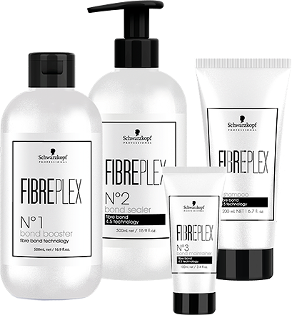

STRONG BONDS

Именно целостность связей внутри матрикса определяет прочность структуры волоса. Однако чрезмерное химическое воздействие может ослабить эти связи и привести к их повреждению.
Бондинг-Технология Schwarzkopf Professional позволяет создавать новые химические связи в матриксе волоса и защищать их от дальнейших повреждений.
Результат: крепкие, послушные, сияющие волосы.

Практически каждая профессиональная марка обрела в своем портфолио такой продукт – аддитив, добавляемый в красящую смесь и защищающий волосы во время окрашивания. Новое поколение продуктов, работающих на основе бондинг-технологий, позволяет предложить клиентам сервис высочайшего уровня. Встречайте наших героев STRONG BONDS:
- FIBREPLEX – телохранитель для ваших волос,
- BC Fibre Force – создает в волосе новые связи взамен разрушенных,
- IGORA ROYAL Highlifts – легендарный осветляющий краситель, в который уже интегрирован первый шаг FIBREPLEX.
Услуги STRONG BONDS направлены на защиту внутренних связей волос и создание новых взамен разрушенных. Все это позволяет добиться превосходного результата окрашивания и идеального качества волос.
БОНДИНГ-УСЛУГА СТАБИЛИЗАЦИИ СТРУКТУРЫ ВОЛОС С FIBREPLEX. Позволяет выполнять окрашивание любой сложности, не просто сохраняя исходное качество волос, а улучшая его. То есть ваши волосы ПОСЛЕ окрашивания выглядят более здоровыми и ухоженными, чем ДО процедуры. Все это стало возможным благодаря уникальной запатентованной технологии FIBREBOND, которая теперь интегрирована во все продукты системы FIBREPLEX.
Как это работает? FIBREPLEX #1: АКТИВАТОР-УСИЛИТЕЛЬ при добавлении в готовую красящую смесь соединяется с фибрами волоса, усиливая структурные связи и тем самым защищая волосы от негативного воздействия красителя или осветляющего порошка.
FIBREPLEX #2:ИНТЕНСИВНЫЙ КРЕМнаносится на волосы сразу после окрашивания; он создает новые связи внутри волосяного матрикса и запечатывает поверхность, придавая волосам силу, эластичность и блеск.
Инновационная технология FIBREBOND интегрирована также в Маску FIBREPLEX #3 и Шампунь FIBREPLEX, которые не только блокируют пигменты красителя внутри волоса, но и также позволяют создавать новые связи. То есть вы покидаете салон и идете отдыхать, а FIBREPLEX продолжает работать, совершенствуя качество ваших волос каждый день.